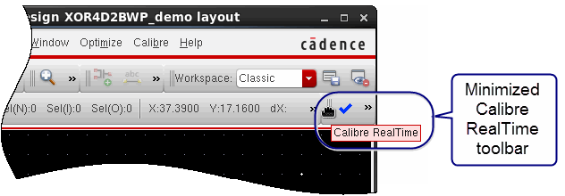

After invoking
the Cadence Virtuoso editor with Calibre RealTime, you see the Calibre
RealTime integrated toolbar.
Procedure
- Start Cadence Virtuoso OA
in 64-bit mode and open a layout.
A partial view of the design
window in Cadence Virtuoso is shown in Figure 1. The Calibre RealTime Integrated Toolbar (Virtuoso) is loaded, but the toolbar is
initially minimized, as shown.
It may take a minute or so
to acquire all licenses and complete the initialization. The following
lines are displayed in the CIW after successful initialization:
Calibre server launched successfully
// Calibre RealTime embedded client initialized successfully at host:port
// Calibre RealTime: Initialization complete
If you do not see notices that
both the server and embedded client started, check that all environment
variables are set as described in “Environment Setup for Cadence Virtuoso with Calibre RealTime”.
Figure 1. Calibre RealTime Integration
with Cadence Virtuoso
- Drag and drop the Calibre
RealTime toolbar to expand it, as shown in the following figure:
- Verify that the RealTime DRC item
was added to the Calibre menu,
as shown in the following figure.
- Proceed to “Specifying and Using Multiple Run Configurations in Calibre RealTime (Virtuoso)”.
Results
In addition to seeing the Calibre
RealTime toolbar and menu selection, you should see these lines
in the CIW:
Calibre server launched successfully
// Calibre RealTime embedded client initialized successfully at host:port
// Calibre RealTime: Initialization complete
Calibre RealTime creates the library
MentorObserverLib. In general, it should not be necessary to do
anything with this library. However, if you want to delete it when
Calibre RealTime is not enabled, see “Deleting Mentor Libraries When Calibre RealTime is Disabled”.